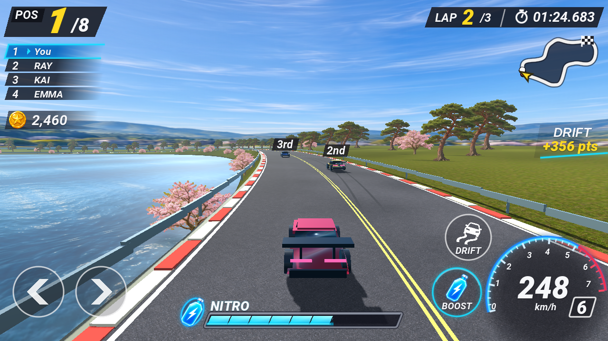

첨부 레퍼런스

현재 수정

레퍼런스와 같은 1280×720 좌표에서 배치·서체·투명도·아이콘·게이지를 비교합니다. 수치는 순위 1, 랩 2, 시간 01:24.683, 속도 248, 코인 2,460, 드리프트 356으로 설정한 검증용 장면입니다. 실제 게임에는 경기 값이 표시됩니다.

각 영역은 원본 이미지에서 같은 좌표를 CSS로 확대 표시합니다. 왼쪽은 레퍼런스, 오른쪽은 선택한 구현입니다.
3D 배경은 현재 프로토타입입니다. 미니맵은 레퍼런스 기반 도식에 실제 경기 진행률을 연결했습니다. POS, 순위표, 시간, 속도, 니트로와 조작 버튼은 실제 HUD 코드로 렌더링했습니다.